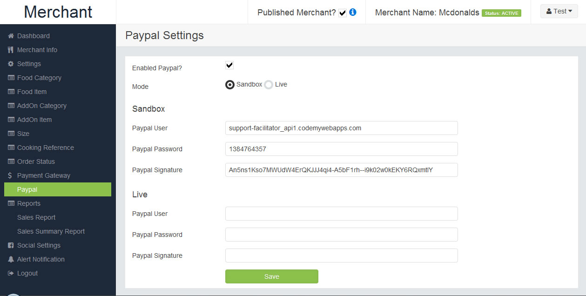

Karenderia
Multiple Restaurant System
Merchant Administration Features
-
Easy to manage food item
-
Manage addon category
-
Size's for food item eg. smal or large
-
Has Option for cooking reference eg. Well done, Medium rare etc
-
Manage address , tax , delivery charges , Receipt Message etc.
-
Send email notification to owner once there is new order.
Payment Gateway
- Accept payment using paypal. you can set the paypal to sandbox for testing.
- Accept Payment using offline credit cards
Reports
-
Sales report
-
Sales report by item
-
Sales summary report
-
All reports can be exported to excel csv file
Charts
-
Sales charts for last 30 days
-
Sales charts by item
Admin Features
Sponsored Listing
- You can simply add any merchant to be on top of the search results.
Membership Packages
- Add your own membership with expiration date and price.
- Package discount
Payment Gateway
- Collect payment using paypal
- Collect payment using offline credit cards.
Social Network
- facebook login
- Social network link
Charts & Reports
-
Merchant membership paymentt reports
-
Merchant Registration report
To Install Karenderia Multiple Restaurant System (KRMS) please follow the following easy steps
- Copy the files to you webserver mostly to your www root or htdocs folder
- Create database in your server using phpmyadmin or any application to create database in your server
- Edit the file protected/config/main.php with your database connection
- Open up your browser and type in this address http://yourserver.com/index.php/install
note: the URL link will depend on the folder where in you install the files
You should see the screen below:
-
Click next to continue to create tables needed for kmrs.
Enter your website information and click next
After your have successfuly finish the 5 steps you will see the link to your admin panel, merchant panel and your front end website
Dashboard
This page is a preview of your total sales for last 30 day and also here you can see new order for today. you can simply view the order details by clicking the view on the table order list
Food Category
this is the page where in you will define your food product category eg. sandwiches , dinner, side etc.
Food Item
in here you will define the food item by category, define price ,discount and addons.
Addon Category
in here you will define the addon category just like the food category
Addon Item
same as food item but for addon category
Other Item Size
this is where you will define the size's of your product like small, medium and large
Cooking Reference
Manage the cooking reference of your food item eg. well done, rare etc.
Store Settings
this is the main settings of your store. define tax , delivery charges any many more..
Payment Gateway
KMRS supports paypal & Credit card offline for collecting payment online, in here you can set the credential of your paypal account.

Reports
Complete sales report. All reports can be exported to excel.
Dashboard
This is the main page wherein you can see all the transaction for the last 30 days.
merchant registration and merchant payment.
Merchant List
This sections is where you can find all the merchant who had signup for membership
with a status of active and not active or expired membership
Sponsored List
This sections is where you can add the merchant to be on top list of the results.
Packages
This sections is where you can add the membership packages.
1. Run Cronjobs for SMS Broadcast
- in order to process the sms broadcast you will need to run a cron job in yoir server with the time interval of every minute
- folder cronHelper should be writable by the server
You will need to run the following 4 cron jobs
curl http://localhost/restomulti/cron/ProcessSMS
curl http://localhost/restomulti/cron/ProcessBroacast
curl http://localhost/restomulti/cron/ProcessPayout
curl http://localhost/restomulti/cron/fax
ofcourse you will need to replace the link with correct address in your server
see sample screenshot on how to set your cron jobs
Note: if curl command is not available in your server try using wget command
To update to newest version follow the simple steps
- first backup your server files incase something wrong. files to backup are assets and protected folder.
- backup the file protected/config/main.php this contains your database connection
- upload or overwrite your server files folder assets and protected folder
- change the db config, open the file config/main.php and copy the old db configuration in your old protected/config/main.php
- run the update db found in your admin panel and run the update merchant info
To update manually you need to use http://winmerge.org/
this tool can be use to check what new files has been added or modified.
files to check for new files or modified files are assets and protected folder.
To transfer the kmrs to another server like for instance from your demo to live server
just follow the simple steps
- Copy all the files from your old to your new server
- Export your database by dumping the structure and data using phpmyadmin note: do not include the table _view_merchant, _view_order_details and view_ratings
this is not ordinary tables.
all the tables with _views do not include it when you dump your mysql data
- Change the htaccess file if necessary. note: this will depends in your new server like example if you install the demo on a folder
and you copy all the files to your new server with no folder then you will need to change your htaccess file
- Change the file protected/main.php database connection to your new db connection settings
- Run the update database by visiting your website url http://yourserver.com/update
- How to change the css stylesheet
to change the css stylesheet you can find the file on assets/css/store.css
- How to change the header image that was used
you can find and replace all the header image on the folder /assets/images
-
How to change the template
all the templates is located at the folder protected/views/store and the layout is located at protected/views/layouts
How can re install kmrs?
to re install kmrs you need to create new database
or if you are using same database you need to delete the records found in _option table with the option_name = installation_done
How can i add discount to my product?
to add discount on your product or food item, on the back office menu food item when you add a new item there is a field for discount, and this discount should be in numeric value.
Is Karenderia Multiple Restaurant System responsive?
yes the front end of KMRS is responsive, so that your user can easily order using their mobile
Error uploading image on backend?
This usually happens when a PHP is not allowed to create folder,
to fixed this you will have to create the upload folder manually and set the permission to 777.
the folder upload should be in the main root directory where the KMRS is installed
Adding item to cart but its empty?
this usually happens when the temp folder of your server is not writable
After install cannot access /admin or /merchant and /store
check your server mod_rewrite or allowed_overwrite is enabled
Windows server cannot access /admin or merchant and /store
create a file called web.config in your root directory where in you install the kmrs
and copy the content from windows.config file
note: if you install kmrs to a sub folder like /food/ then you will need to change this line
url="index.php/{R:0} to url="food/index.php/{R:0}
How to update krms without the /store in url
first backup your protected/config/main.php
and replace your current protected/config/main.php with the new main.php
main.php
after you replace the main.php update the database configuration with your old db config
'db'=>array(
'class' => 'CDbConnection' ,
'connectionString' => 'mysql:host=localhost;dbname=restomulti',
'emulatePrepare' => true,
'username' => 'root',
'password' => '',
'charset' => 'utf8',
'tablePrefix' => 'mt_',
),
= 5.3 (30 May 19) =
- fixed - commission menu access
- fixed - profile section in merchant panel
- fixed - expenses points
- fixed - stripe getting credentials for membership
- update - move single app addon in admin panel
- update - chart value to decimal
- update - config.php
UPDATE INSTRUCTION:
Click here
= 5.2 (12 May 19) =
- fixed - search food item
- fixed - all search in home page
- fixed - creation of table stripe_loger
- fixed - access restriction when merchant create user
- fixed - forgot password for admin/merchant panel
- fixed - ratings view table
- update - remove RTL options in theme settings
- new - add RTL options in manage language
- new - add menu single merchant in admin panel (singleapp next version all settings will be in admin panel rather in merchant panel)
- new - mercadopago version 2
UPDATE INSTRUCTION:
Click here
= 5.1 (01 May 19) =
- fixed - packages list drop down
- fixed - set address
- fixed - get cart count in mobile device view
- fixed - merchant registration cuisine list
- fixed - menu restriction admin and merchant panel
- fixed - no validation for certain controller for csrf token
- update - stripe payment using new api version 3
- update - paypal payment using api version 2
- update - clickatell api
- update - encryption in offline credit card
- new - add merchant access restriction
- new - manage credit card in merchant panel
in version 5.1 stripe SDK is updated to latest version, please update the libray in protected/vendor/stripe,,
and old library stripe2 folder is remove on this version in the path protected/vendor/stripe2
UPDATE INSTRUCTION:
Click here
= 5.0 (15 April 19) =
- fixed - cannot run in php 7.1 , 7.2
- fixed - cannot run in server mysql strict enabled (most of the changes is in table structure of database)
- fixed - cron near expiration template not changing
- fixed - driver signup country code
- fixed - issue in ajaxadmin that can access outside the server
- update - update admin merchant and front controller
- new - add feature image in cuisine
- new - add print functions in admin and merchant panel for printer addon
Important : if you have existing kmrs and will update to version 5.0 you need to update your config.main.php
and this version has enabled crsf token by default, your addon might not work
cause it will check for crsf token , to avoid this issue edit your protected/config/main.php
and disabled csrf token on this line 'enableCsrfValidation'=>false .
once i update all the addons is advisable to turn on csrf in your config.php
UPDATE INSTRUCTION:
Click here
= 4.8 (23 November 18) =
- fixed - Merchant Header/Background not saving properly
- fixed - cancel order list
- fixed - template BOOKING_UPDATE_STATUS not adding restaurant name and status is not translated
- fixed - browse map using mapbox
- fixed - get cancel order
- fixed - address book for location not refreshing after deleting records
- fixed - cannot checkout using search by location if there is address book
- fixed - upload bank deposit
- fixed - reviews count should based on status
- new - add review earning based on status
- new - publish review based on order status
- new - add hours for request cancellation of order
- new - options to set cancel order status for request cancel order
- new - add options to define pre-configure food item size
- new - add table number for dine in transaction
- new - add restaurant favorites
- new - add driver signup
- new - add options to remove confirm page during checkout
- update - update mapbox distance api
UPDATE INSTRUCTION:
Click here
= 4.7 (31 August 18) =
- fixed - review order id not showing correctly
- fixed - upload receipt logo
- fixed - upload payment logo for pay on delivery settings
- update - cancel order
- new - add cancel order in admin panel
- new - add mapbox as map provider
UPDATE INSTRUCTION:
Click here
= 4.6 (16 August 18) =
- fixed - report missing token parameters admin.js
- fixed - mobile view receipt not working
- fixed - 2 flavor tampered price
- fixed - category is missing in receipt when ordering tru mobile device browser
- fixed - add checking of table for addons
- fixed - authorize.net payment gateway
- fixed - character set for tables
- fixed - can re-order item if food is not available
- fixed - add rechecking of minimum order table for delivery during check out
- fixed - fixed all query to use yii quote functions
- new - add settings for singleapp to turn off from admin panel
- new - add checking of modules table if available
- new - add checking of block email in booking table
- new - add request to cancel order
- new - add template for request cancel order
- new - change all upload functions to use secure upload library
- new - add disabled merchat ordering from admin side
- new - add address book when using search by location
- new - add category image
- new - add food category scheduler to appear in specific day of the week
- new - re-layout admin settings section into tabs
- new - add new computation for 2 flavors
- new - new date picker and time list options
- new - add reviews per order
- new - add singleapp modules menu in merchant panel
- new - add RTL support
UPDATE INSTRUCTION:
Click here
= 4.5 (01 April 18) =
- fixed - translation of size in merchant front end menu
- fixed - customer export to mailchimp
- fixed - templates not loading when label has space or special characters
- fixed - fax receipt not showing delivery address
- fixed - getting of min delivery table
- fixed - browse resto Delivery Distance missing unit
- fixed - add size in sms order details
- fixed - default delivery fee
- fixed - tips not correct if manually entered
- fixed - discount price not showing in getting the first price
- fixed - address book country code
- fixed - add checking if already installed kmrs in installation file
- fixed - cart count when mobile device view
- fixed - jquery cookie
- fixed - booking table time when using mobile device browser
- new - add request token validation for possible post data hacking
- new - add purifier to all fields for xss injections
- new - add cart price validation
- new - offers add applicable to transaction type
- new - add options to check/uncheck all addon during adding of food item
- new - add new code for points addon version 2.0
- new - add printer addon in menu
UPDATE INSTRUCTION:
The following files has been changed in version 4.5
- assets/js/admin.js
- assets/js/store.js
- assets/js/store-v3.js
- protected/config/main.php added params array => validate_request_session and validate_request_csrf
- protected/components/AjaxAdmin.php
- protected/components/Ajax.php
- protected/components/Functions.php
- protected/components/FunctionsK.php
- protected/components/FunctionsV3.php
- protected/components/InstallHelper.php
- protected/controllers/AdminController.php
- protected/controllers/AjaxadminController.php
- protected/controllers/AjaxController.php
- protected/controllers/AjaxmerchantController.php
- protected/views/store
- protected/views/front
= 4.4 (30 August 17) =
- fixed - installer issue in adding new order status
- fixed - addon as dropdown revert back to checkbox
- fixed - how to updates kmrs instructions in documentations
- fixed - add video tutorials sections in documentations
= 4.3 (28 August 17) =
- fixed - home page loading slow due to looping of cuisine
- fixed - dinein transaction button not working in mobile device
- fixed - booking notification to merchant & admin if email address is 2 or more
- fixed - sending of bank instructions
- fixed - fax
- fixed - menu options 3 when merchant disabled ordering
- fixed - offline bank deposit for purchase sms
- fixed - remove address from customer list and add customer in admin panel
- fixed - custom fields not displaying properly when edit customer in admin panel
- fixed - email verification via facebook or google sigup
- fixed - offline bank deposit instructions when merchant signup
- fixed - add delivery instructions in confirm page
- fixed - language selection in front end
- fixed - merchant menu options 2 background not working
- fixed - category description not translatin in menu option 2
- fixed - checking of delivery distance when its using kilometers
- fixed - checking of merchant closing time
- fixed - purchase offline sms using offline credit card
- fixed - validate sell limit
- fixed - customer pagination list in admin panel
- fixed - sms validate balance
- fixed - add view cc details when purchase using offline cc in sms package
- new - add BOOKING_UPDATE_STATUS push template
- new - add RECEIPT_SEND_TO_MERCHANT push template
- new - add cash on delivery change required in admin panel settings
- new - add tax number in receipt
- new - merchant can now reply to customer reviews
- new - add registered type fields in admin -> customer list
- new - change admin sms settings layout
= 4.2 (15 June 17) =
- fixed - reviews affected by search food item in menu page
- fixed - remove delivery fee in search page when merchant transaction is only dine/or pickup
- fixed - table booking settings missing save button
- fixed - double contact number during guest check out
- fixed - if order status has spaces notification popup will does not show
- fixed - remove delivery asap if transaction type is dinein
- fixed - guest check out forms if transaction is dinein and pickup
- fixed - mercapago init payment
- fixed - braintree merchant payment settings not saving
- fixed - contact number during checkout dinein/pickup
- fixed - razory pay decimal issue
- new - add new functions in merchant settings to make menu private
- new - remove edit/delete in reviews if review is past more than 10 days
= 4.1 (29 May 17) =
- fixed - language parameters sending twice in admin templates
- fixed - installation problem with confirm password
- fixed - payment credentials to use when merchant is commission+invoice
- fixed - remove ereg_replace in asstes/css/css.php
- fixed - delete images in uploaded folder if records is deleted
- fixed - incoming orders
- fixed - dinein minimum order toggle message
- fixed - view tables view_location_rate
- fixed - update controller
- new - add voguepay payment gateway
= 4.0 (23 May 17) =
- fixed merchant statement reports
- fixed remove delivery asap if merchant is pre-order
- fixed ajax not working in php 7
- fixed tips is showing when adding voucher even if tip is disabled
- fixed pay on delivery change to Pay On Pickup when transaction type is pickup
- fixed merchant holiday not working
- fixed pay on delivery should show in merchant panel even the merchant is commission
- fixed merchant is not published still showing in homepage if featured
- fixed if merchant is not published still can view the menu
- fixed advance search keyboard submit not working
- fixed packaging fee not included in receipt email
- fixed commission type not saving during merchant signup
- fixed can enter quantity zero
- fixed guest checkout cannot use the same email during checkout
- fixed change all view tables structure
- fixed add index to all tables
- fixed add category in cart
- fixed translation of food item,size etc in cart
- fixed remove merchant logo
- fixed when item has html and html is incorrect will break the menu page
- fixed remove delivery asap if pre-order
- fixed cash on delivery available change to cash on pickup if transaction is pickup only
- fixed cash on delivery change to cash on pickup if transaction is pickup
- fixed show food category in cart
- fixed add index to all tables for faster query
- fixed curlManager lcfirst if php version is lower than 5.3.0
- fixed display merchant social links in menu
- fixed checking of holiday
- change - manage language
- change - translation
- change - view tables view_merchant
- change - view tables view_order_details
- change - add commmission type in merchant commission signup
- new - add sound alert for new orders in admin panel
- new - orders status can change via admin panel
- new - add table minimum purchase
- new - razorpay payment gateway
- new - add confirmation page during checkout
- new - printing receipt using thermal printer
- new - change email settings layout
- new - add Sendgrid for sending emails
- new - add MailJet for sending emails
- new - add Elastic for sending emails
- new - add email logs in admin panel
- new - add new template notifications for email,sms,mobile push
- new - can now translate all notification including email, sms , push
- new - notifications settings for admin
- new - add confirm page during checkout
- new - add platform where the order is coming from
- new - add pre configure size when adding merchant
- new - add notification email/sms to send to merchant when there membership is about to expire
- new - add checking of closing time before customer can place the order
- new - add enabled/disabled space between currency and price
- new - template for booking send email to customer,admin and merchant
- new - add booking history in customer profile
- new - allow email or mobile during login
- new - move cart to new page when viewing in mobile
- new - add search food name in merchant menu front end
- new - add manage location (this will be use during search by location options)
- new - delivery charges rate by location
- new - new search options using city/area, state/area and by post code
- new - add incoming orders in admin panel
- new - add invoice list in admin panel
- new - add invoice pdf
- new - add cronjobs page admin panel
- new - add restriction popup
- new - options to disabled payment options per merchant
- new - options to disabled booking table per merchant
= 3.4 (17 Nov 16) =
- fixed - get app link in the footer when viewing in mobile device
- fixed - error in merchant access
- fixed - error in getting value of msg91 settings
- fixed - home link not working
- fixed - merchant user login to include is commision fields
- fixed - link in merchant panel view restaurant
- fixed - food item link when viewing in mobile device
- fixed - logo link remove /store
- new - add count in cart icon when viewing in mobile device
= 3.3 (07 Nov 16) =
- change - unit millimeter to meter
- change - the time picker to dropdown when viewing in mobile device
- fixed - tips when adding voucher
- fixed - time picker when viewing on mobile device
- fixed - guest checkout sending emails to autogenerated email
- fixed - booking time
- fixed - merchant statement date picker
- fixed wilcard search for restaurant name
- new - view merchant credit card in merchant payment report
- new - saved facebook profile picture during login using facebook
- new - add CSRF token validation for XSS/Cross Site Scripting
- new - add html purifier for HTML injectable
- new - change url structure of the front end (remove /store)
- new - save client id on booking table
- new - auto fill booking information name/email & mobile
- new - auto add to task to driver app
- new - add new sms gateway plivo
- new - add new sms msg91
- new - add offline payment in merchant registration report
= 3.2 (30 May 16) =
- new - add options to turn off membership signup
- new - add options for the merchant to activate their own menu
- new - add new sub item response on functions displayOrderHTML
- new - add new payment gateway Braintree
- fixed browse restaurant map
- fixed cuisine translation on filter
- fixd paypal confirmation layout for merchant payment
- fixed cuisine page
- fixed admin voucher
- fixed admin add voucher
- fixed cuisine not translating on merchant signup
- fixed days not translating on merchant hours tab
- fixed reviews cut off and fixed the formating of the review
- fixed cooking ref translation
- fixed search results showing delivery fee if merchant services offer only pickup
- fixed offline deposit payment
- fixed confirm order to save history and push notification
- fixed merchant menu change the delivery information to Distance Information if merchant offers only pickup
- fixed add translation for food item in admin dashboard and merchant dashboard incoming order
- fixed default address not saving
- fixed booking message is not included on email when approved or denied
- fixed ingredients not translating
- fixed cooking ref not translating
- fixed markercluster with local library files (you need to update your assets folder)
- fixed remove delivery estimation and delivery distance if restaurant offers only pickup
- fixed prevent customer to edit the order if they apply redeem points
- fixed double sending of email if use smtp
- fixed limitDescription bugs on package list
- fixed add back button on select map address
- fixed no checking of maximum order on payment options
- fixed search by cuisine
- fixed search restaurant name if restaurant name has single quote
- fixed add push notification to customer when merchant accept the order tru confirmation email
- fixed checking of addon modules
= 3.1 (31 march 16) =
- new - add options to remove search by address on advance search options
- new - add language bar on top
- new - change the social login layout and position
- new - disabled button once place order to avoid accidental double click
- new - add translation for cuisine
- new - customer cannot apply loyalty points and voucher at the same time
- new - on menu page make the reviews clickable that will go to reviews tab
- new - add maxlength of 5 when adding food item and addon qty
- new - add instragram and youtube channel link on connect with us sections
- new - add distance calculation for straight line, driving and transit
- new - add options to switch to new time picker ui this is under tneme settings
- new - added new sms gateway Swift SMS Gateway
- new - added new sms gateway Solutionsinfini
- fixed app link
- fixed search query which is including not active merchant
- fixed search by restaurant name query which is including not active merchant
- fixed ratings on home page
- fixed ccr to ocr
- fixed merchant slug
- fixed review not translating
- fixed featured resto lineup
- fixed mobile logo not saving once you saved twice
- fixed payment options list for membership merchant
- fixed facebook login
- fixed meta view port for mobile device
- fixed auto back when adding a food item in mobile view
- fixed fixed theme compression functions
- fixed mobile country on checkout not setting the default country
- fixed banner small gap on bottom when viewing on chrome browser
- change cuisine list change id instead of cuisine name
= 3.0 (19 march 16) =
- fixed remove checking of mobile number on guest checkout
- fixed search results merchant open if merchant settings close store is set to true
- fixed change field not showing if only cash on delivery payment options is enabled
- fixed search query for restaurant slug
- fixed cannot save merchant if there is special character on restaurant name
- fixed add SQL_BIG_SELECTS on search area
- fixed rechecking of adress before placing orders
- fixed minimum order currency position on search page
- fixed add + on the mobile number if sms gateway is nexmo
- fixed facebook login not saving first name and lastname
- fixed credit card offline not showing if the only payment options is offline credit card
- fixed offline credit card list showing other credit cards
- fixed adding of credit card using guest checkout
- fixed delivery fee not on backend receipt
- fixed createslug functions
- fixed donnot combine order if the special instruction is different
- fixed addon price not formating correctly
- fixed food item wil be separated if has different instruction
- fixed remove view restaurant by map options on admin settings
- fixed receipt email including ingredients
- fixed admin voucher can be used if applicable to merchant
- fixed receipt not including tips
- fixed receipt not including loyalty points
- fixed move voucher after customer signin
- (new) Front end design and layout
- (new) add html compression
- (new) using boottrap
- (new) theme settings
- (new) cookie law policy
- (new) website compression
- (new) custom footer options
- (new) options to control the top menu
- (new) mobile app link options
- (new) options to disable merchant menu tabs
- (new) customer signup email verification
- (new) mobile paypal settings on admin & merchant panel
- (new) add new features for assigning page to two columns
= 2.6 (31 October 15) =
- fixed not redirecting after mobile code verification page
- fixed Order SMS, {customermobile} display as Merchant Number
- fixed sms verification spam protection
- fixed view restaurant by map
- add more sms available tags
- add smsGlobal gateway
- add options to search by post code, by area/city and by address
= 2.5 (24 October 15) =
- fixed facebook login conflict with google captcha
- fixed ask address google list address behind the form
- fixed generating merchang slug
- fixed contact page email validation
- fixed sms sending of sms to merchant and client
- fixed cart not adding correctly if size is different
- fixed booking table link showing on search results if admin disabled the booking features
- fixed upload file which generating same id
- fixed menu if admin disabled ordering the menu is not responsive
- add confirm password on customer and merchant signup
- add order status history
- add options to send order sms verification code on place order to avoid fake orders
- add food item gallery
= 2.4 (17 October 15) =
- fixed merchang signup type of service not saving
- fixed custom page slug issue
- fixed non taxable delivery charge
- fixed mobile menu
- fixed customer receiving 2 emails when using smtp
- fixed login/signup popup responsive
- fixed checking of minimum order if transaction type is pickup during payment options
- fixed menu that shows deleted food item
- fixed popup address not translating the required fields
- fixed sms not adding the customer address tag
- fixed merchant date/time displayed on menu page
- Remove the ability for a user to make unlimited review per order. user can do one review per order.
- fixed add to cart function it will increase the quantity of the item if the item is the same
- fixed customer review
- fixed popup food item jumping to top of the page (you need to ovewrite the file assets/vendor/fancybox/source/jquery.fancybox.js)
- move Offline Credit Card Payment settings on payment gateway
- move paypal on/off settings on paypal payment gateway
- fixed check if there is any package published before displaying membership signup
- fixed customer cannot choose delivery/pickup time had already past
- reconstruct front end layout template in terms of requiring css and js file
- remove all css text transform to capitalize issue with different language
- fixed merchant withdrawals
- fixed booking table section not responsive
- add update link on admin panel dashboard
- add option to set default language on merchant and admin panel
- add options to hide the language bar on admin and merchant panel
- add price on addon item on merchant backend
- add multiple time slot
- add option for merchant to select or based the changing of order status on delivery/pickup date or date of order
- add options for the table booking to accept booking on the same day
- add options for the admin to disabled merchant can add their own order status
- add user review per order refference on admin & merchant backend
- add options to disabled or hide food item if not available
- add options for the view map to set the default zoom and disabled map on front end
- add options to change the default purchase email subject
- add options to disabled table booking by website owner
- add options for admin to disabled sending of sms after merchang changing the status of the order
- add options for admin to disabled the popup asking for customer address
- add options for the admin to change the default social shared text
- add security google captcha features
- add options to switch merchant from membership to commission
- add options to send email after merchant change the order status
- add google captcha before placing order to avoid fake order
- add blocking of mobile number and email address
- add admin options to blocked customer email address and mobile number during registration and login
- add send welcome email to first time customer registration
= 2.3 (17 August 15) =
- fixed menu responsive layout
- add forgot password during checkout
- add option non taxable for food item
- add option non taxable for delivery charges
- add option to add custom fields on customer registration
- add voucher code to be used only once
= 2.2.1 (31 June 15) =
- fixed update controller missing table fields
- fixed admin reviews not working
- fixed facebook login using facebook api v2.4
- fixed error when adding food category
- fixed delivery rates when address has been change during checkout
- fixed if only one payment is enabled it will be the default payment no need to tick during checkout
- fixed sticky category on chrome and safari
- fixed google login during checkout
- fixed view map
- fixed merchant add offers
- fixed Withdrawal default payout account
= 2.2 (25 June 15) =
- fixed pay on deliver not showing on merchant
- fixed checkout when type of transaction is pickup
- fixed popup food item to have a default selected price
- fixed translation for = Showing 0 to 0 of 0 entries
- fixed add type of card on receipt when paying using pay on deliver
- fixed sponsored merchant not adding when expiration date format is not yyyy-mm-dd
- add status field on addon category
- fixed navigation when searching by post code
- fixed if merchant is expired merchant link is still active
- fixed if merchant is expired merchant link is still active
- fixed meta description and keywords to include merchant name tag
- fixed discount price not showing on menu 1 and 2
- fixed remove delivery fee if transaction is pickup
- fixed voucher
- add google login
- add receipt logo
- add admin permission access controller
- add support currency symbol for indian Rupee
- add review management on admin panel
- remove spicy dish and replace it with dish management on admin panel
- remove the header with backround template instead use the standard menu template
- menu - add sticky cart options
- menu - move the category to the left as sticky
- menu - add merchant information tab
- menu - remove delivery Distance Covered,Delivery Fee if transaction type is pickup
- add admin vouchers
- add multiple translation for food
- add option for search result by distance not name
- add tab for restaurant information
- change menu layout
- remove delivery when transtype if pickup
- include options to include offline payment in admin balance
- add option to add google api key
- add one more delivery address during checkout
- add options to select address from the map
- add address book
- add BHASHSMS SMS Gateway
- add view restaurant by map
= 2.1 (19 June 15) =
- merchant - add food item to have two flavor options
- admin - add option to choose fixed or percentage comission
- fixed delivery table on search results
- fixed add to cart pop color if adding to cart is successful
- fixed pay on deliver payment not showing if merchant is commission type
- fixed epaybg when purchasing sms credits
- add options to include any cash payment eg. COD on merchant balance
- fixed twilio sms error - The message body exceeds the 160 character limit
- fixed if item have ingredients or cooking reference it will not be auto add cart instead a popup will show
- fixed mobile number not saving on receipt
- make "Apartment suite, unit number, or company name" required
- add sending of sms test functions on sms settings
- add option for merchant to disabled ordering
- add option to disable review editing from merchant
- add option for date format and time format
- add required options for addon item
- add customer registration mobile verification
- add options to disabled popup login & signup and use a normal page instead
- add options to disabled single food item auto add to cart
- Fixed paypal payment if merchant is commission base
= 2.0 (31 May 15) =
- fixed search result if merchant has no coordinates
- fixed if user is on profile page and he logouts and the page stays on profile page
- fixed merchant signup if merchant name has special characters
- fixed merchant signup if Disabled Verification is on.
- fixed delivery fee added when paying paypal if transaction is pickup
- fixed search results if filtered by free delivery (if merchant has delivery fee tables)
- improve search results speed
- improve cart querying of records
- improve admin merchant list querying of records
- fixed zoom size on map for wide coverage of the map
- fixed table reservation if date and time is not on opening hours of the restaurant
- add checking of date and time during checkout
- admin - add reviews option only accept reviews for those who had actual purchase on the merchant
- merchant - fixed merchant balance to exclude any cash payment
- merchant - fixed merchant sms notification when mobile number is multiple (separated by comma)
- add cash/card payment type options on merchant statement report
- add cash or card payment options on admin commission report
- add options to send sms when the order status is change
- add options to addd terms and condition during merchant signup and customer sigup
- fixed merchant notification by email if merchant notification email is multiple
- add options for the decimal and comma separation
- fixed fax text being squeeze
- fixed customer delivery address when purchasing second time
- merchant - add packaging options for increasing packaging per item
- merchant user - add permission to published merchant
- add option to add food item directly to cart ( if food item is single only without addon and sizes)
- add card fee on paypal payment
- merchant - add minumum and maximum order for pickup transaction
- Add tips during checkout
= 1.0.9 (11 May 15) =
- Fixed paypal not match total amount
- Fixed merchant commission report
- Fixed search results
- Fixed sending email to customer when customer purchase then logout
- Fixed Merchant Sales Summary Report
- Fixed Spicy Dish not translated
- Fixed guest checkout when choosing pickup
- Fixed merchant slug when adding merchant
- Add validation on delivery time and pickup time
= 1.0.8 (5 May 15) =
- Add Commission
- Add Withdrawal
- Add Mandrill API For sending Email
- Add Merchant Commission Signup
- Add Sending of email
- Add BarclayCard Payment Gateway
- Add EpayBg Payment Gateway
- Add Fax Services
- Add Fax Packages
- Add Fax Logs
- Add Fax Payment Transaction
- Add Merchant Sales Summary Report
- Add Booking Summary Report
- Add Website Security
- Add Guest Checkout
- Add Website Timezone
- Add Option to disabled Ordering
- Add Option to hide the food item price
- Move the Menu layout options from merchant to admin panel
- Featured restaurant can activated on merchant information
- Add options number of days that merchan can change the status
- Add options to disabled offline credit card payment
- Add ABN fields on merchant registration
- Add Spicy dish on food item
- Add Spicy dish on food category
- Add Ingredients
- Add Delivery Distance Charges Rates
- Add Free delivery above Sub Total Order
- Add Merchant Commission Statement
- Add Merchant Commission Earnings
- Add Merchant Commission Withdrawals
- Add Merchant Purchase Credit Transactions
- Add Merchant Fax Services
- Add Merchant Booking Summary Report
- Fixed SMS purchase when Choosing Bank Deposit Payment
- Fixed Security issue during login
- Fixed Mobile number fields by adding mobile country code
- Fixed Search merchant slow processing
- Fixed Merchant user can have the same usernamer and password
- Add Language Pack
- And Many more .....
= 1.0.7 (24 Mar 15) =
- Add 2 menu layout options for merchant
- Add Unicode options for Clickatell and Nexmo
- Add Sender fields for clickatell
- Fixed Order not showing if credit card payment method was use
- Fixed merchant offers cannot add more than one offers
- Fixed missing pickup time and pick date if transaction is pickup
- Fixed featured restaurant not showing if some of the image is missing
- Fixed search results hours of operation been cut off
- Fixed map
- Fixed Merchant name at check out page SEO titles
- Fixed no access if user created accessing the following, purchase sms credits, table booking and all payment gateway
= 1.0.6 (20 Mar 15) =
- Add featured restaurant
- Add subscription
- Add subscription list on admin panel
- Add bulk upload merchant as CSV
- Add discount on food item
- Remove Delivery date and time when transaction is pickup
- Add options to add custom link in custom page
- Add pay on delivery
- Add clickatell SMS gateway
- Add SMS Logs on admin panel
- Add upload Google map marker
- Add Global email sender fields
- Add Email template sents to customer
- Add Email template sents to merchant
- Add Email send to merchant to confirm or set the status of the order as receive
- Add Merchant Offers such as discount
- Add Speacial email to merchant with a link to confirm order received
- Fixed when user ordered in 2 different restaurant at the same time
- Fixed order was saved in the database before it was paid by the customer
- Fixed if the cuisine has too long
- Fixed overflow cuisine on search resilts
- Fixed paypal error order does not match with the total
- Fixed SMS cron jobs
- Fixed when created user purchase sms
= 1.0.5 (03 Mar 15) =
- Add advanced search, user can search by restaurant name, streetname, cuisine and by food item
- Add google map address on search results
- Add food packaging charge
- Add Nexmo SMS gateway
- Client list add export functions ready to import in mailchimps mailing list
- Option to enabled/disabled merchant payment gateway
- Option to enabled/disabled SMS on merchant
- Add auto login to merchant
- Add Restaurant Gallery
- Add option to change the position of the currency to left or right position
- Add SMTP functions for sending emails
- Fixed library when server is using secure website (HTTPS)
- Fixed insert problem after entering or adding food item
- Fixed cart when ordering on different merchant
- Add option to set the maximum booking tables per day
- Add contact field on customer list
- Add option to view orders from admin panel
- Add change field when ordering
- Add Country restriction or set specific country on merchant signup
- Add options to open in a new window in custom page
- Add Full order details in SMS
- Add options for SEO titles
- Add option to set restaurant holidays or restaurant dayoff
- Fixed map when viewing on mobile
- Add forgot password in admin panel
- Add payment gateway Paysera
- Add Offline payment when buying SMS credits
- Add Email template for merchant activation and forgot password
- Fixed Addon not displaying on front end
- Fixed image not displaying on front end
- Fixed utf8 character encoding when sending emails
- Fixed Offline payment gateway
= 1.0.4 (26 Dec 14) =
- Add Incoming orders from different merchant on admin panel
- Add merchant sales report on admin panel
- Add Offline bank deposit payment
- Add bank deposit verification
- Add Receive bank deposit list on admin panel
- Add table booking notification
- Add table booking email alert
- Add table booking email for approved and denied
- Fixed Receipt when viewing on merchant panel
- Remove delivery charges when the transaction type is pickup
- Fixed getting google map latitude and longtitude on merchant and admin
- Fixed Merchant name on top when the merchant name is too long
- Add upload security for running php scripts on upload folder
- Add security that only admin can upload language php file
- Fixed map on browse restaurant
- Fixed browse restaurant page when viewing on mobile
- Remove sub header when viewing on mobile
- Fixed amount on order when there is a number on sizes
- Add Text editor for email template
= 1.0.3 (08 Dec 14) =
- Add Table booking
- Add Business open/close hours checking
- Add Merchant timezone seletion
- Fixed home search to use radius when searching for restaurant
- Add Country field for merchant signup
- Add Country field on merchant backend
- Add Customer list on admin panel
- Add functions for adding google analytics code
- Add payment gateway PayUMoney
- Add payment gateway Sisow
- Add google map dragable marker
- Add payment history in merchant backend
- Add Kilometers options for merchant
- Add pre-order options
- Add Restaurant Social sharing
- Add Maximum order field merchant
- Merchant Add field for close message
- Fixed Upload files that overwrite the files if the filename is the same
- Fixed Translation specially the Date and hours on admin panel and merchant
= 1.0.2 (12 Nov 14) =
- Add SMS gateway - twilio
- Add SMS Module - merchant will purchase sms credits to site owner.
- Add SMS Broadcast - merchant can send bulk sms to customer for offers and promo
- Add SMS notification to merchant when there is new order.
- Add SMS Transaction report
- Add limit to sell of merchant
- Add Mobile number in registration
- Add field for merchant website
- Add Mercadopago Payment Gateway
- Add Automatic detection of customer location using google api
- Add auto fill address using google api
- Add Direction guide on merchant map using google api
- Add geo decode functions that convert address to latitude and longtitude
- Add Voucher Management
- Add Voucher Codes that will apply discount
- Add Ajax notification when there is new order, a pop up will appear with sounds.
- Add ACL System. To divide cook from manager from restaurant owner. So each have access to specific areas.
- Add customer reviews management
- Add Browse restaurant
- Add Customer change address
- Fixed Translation when setting default language
- Fixed When adding credit card information
- Fixed Merchant thumbnail image
= 1.0.1 (14 Oct 14) =
- Add Translation module
- Add SEO
- Merchant can add their own Header/Background
- Add Settings for Delivery Distance
- Add Stripe Payment Gateway
- Add Email notification when there is new order placed
- Fixed Email receipt
- Fixed Installation issue
= 1.0 (06 Oct 14) =
I spent a lot of time on this thing. Nevertheless it's still not finished. I like to improve it wherever I can and appreciate your feedback. I'd be glad to help you if you have any questions relating to this plugin. No guarantees, but I'll do my best to assist.